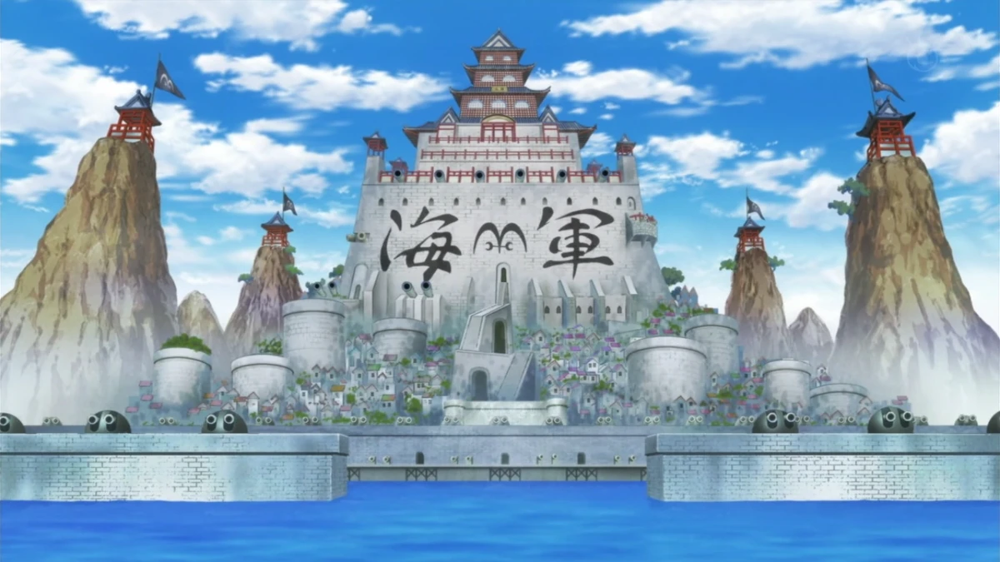
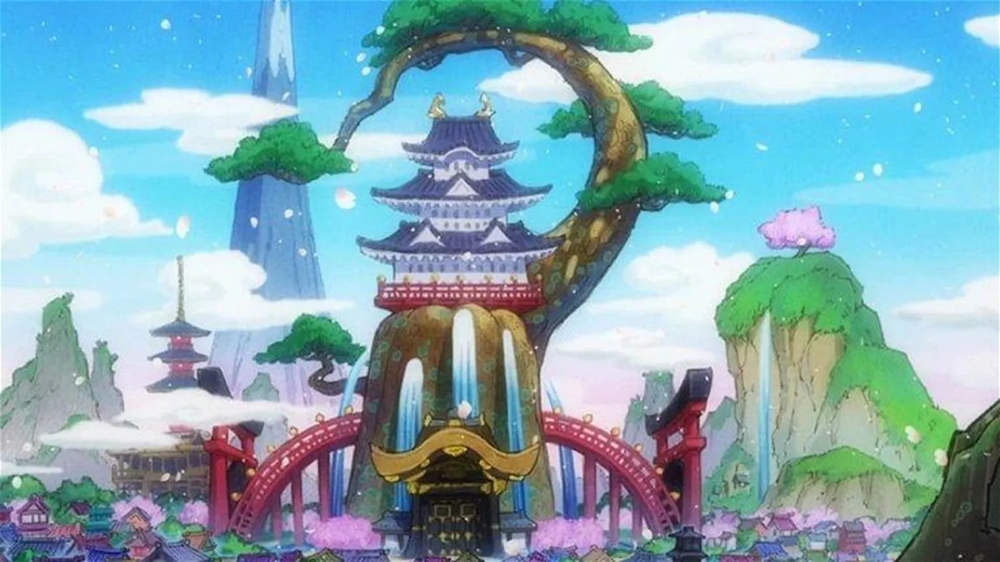

Inicio
Pagina-1
Pagina-2
Pagina-3
Mis Arcos Favoritos de One Piece
Aquà están los arcos que más me han volado la cabeza ğŸ–ğŸ´â€â˜ ï¸
Marineford 🧊🔥
La guerra de Marineford es uno de los arcos más épicos de One Piece. Luffy y muchos piratas luchan para rescatar a Ace. Emoción, acción y tragedia pura. 
Enies Lobby 🔥🗝️
Enies Lobby representa el poder de la amistad. Toda la tripulación lucha contra el Gobierno Mundial para salvar a Robin. ¡Icónico el “I want to live!”!
Wano 🏯⚔️
Un arco largo, pero lleno de batallas épicas, revelaciones importantes y el despertar del verdadero poder de Luffy. El estilo samurái le dio un toque brutal. 
Resumen rápido:
Marineford
31 capÃtulos
Enies Lobby
49 capÃtulos
Wano
140+ capÃtulos